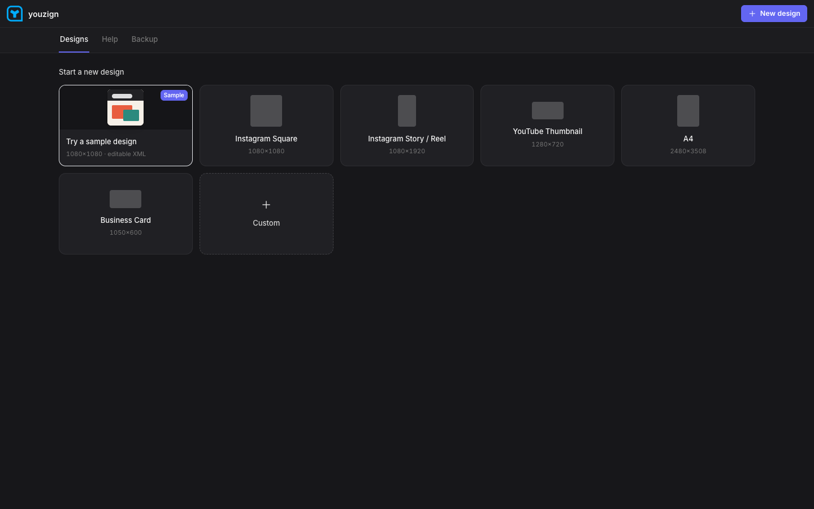
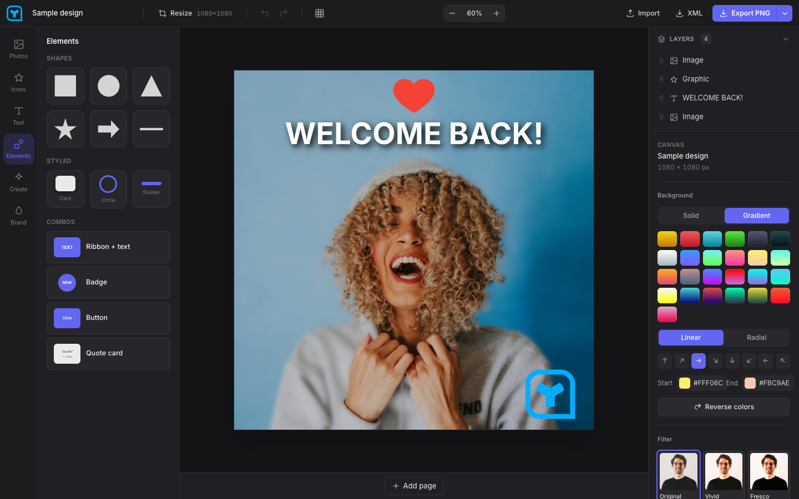
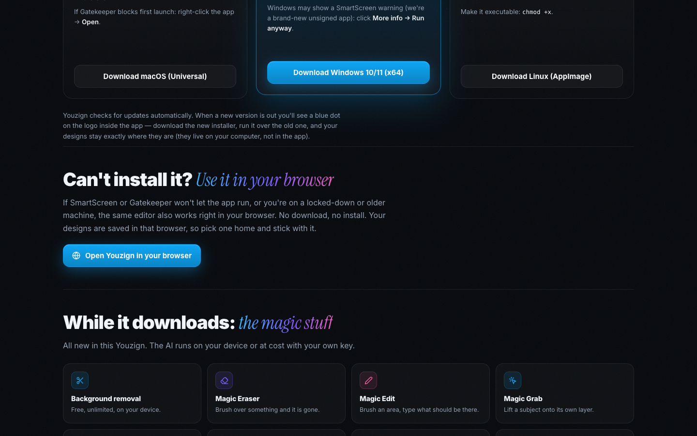

Live: youzign.com/editor + /dashboard, verified in headless Chrome against production
- Code: new
apps/editor/src/asset.tshelper; Vitebaseis/editor/for plain web builds,/for Tauri (TAURI_ENV_PLATFORM) and dev — desktop build verified unaffected. All 336 tests green (196 editor-core, 20 renderer, 120 editor). - Deploys: editor shipped to
yz-editor-k4x7production with files under/editor/+ root 307 →/editor/(same origin, existing users' designs survive); landing shipped with the rewrites + the /thanks section. New helper:scripts/deploy-web-editor.sh. - Verified live: /dashboard 307s to /editor and renders the dashboard; the sample design opens with a fully painted canvas (image, text, graphic, filter thumbnails — the base-path-sensitive assets); /editor, /editor/, wasm, onnx model, brand logo, starter XML all 200;
version.json(the desktop updater endpoint) untouched and alive; zero path-related console errors. Only console noise: pre-existing html-to-image warnings about cross-origin Google-Fonts CSS during thumbnailing — remote URLs, unrelated to this change.


